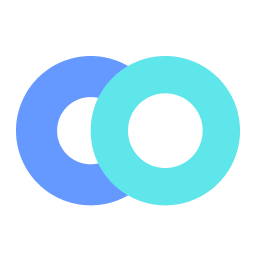

01Porter
Building a Supply-Led Growth Engine That Drove 10% of New Customer Acquisition
Rebuilt the rewards journey for driver-partners — clearer earning states, faster redemption, measurable lift in conversion.
Read case studyDesigning products for millions across borders
and shipping ideas with Claude
01 — At a glance
Across logistics, fintech and AI — working with incredible teams to solve real problems at scale.
Current
Previously

Convin.ai Product Designer 2020 — 2021The principles behind everything I design.
02 — Selected Work
Keep scrolling — the deck stacks itself.
Rebuilt the rewards journey for driver-partners — clearer earning states, faster redemption, measurable lift in conversion.
Read case studyA visual way to split payment traffic across processors — percentages, priorities and fallbacks without touching code.
Read case studyRanking lenders, distributing lead share and configuring education-loan flows — an ops platform that scales with the funnel.
Read case studyDesigning AI-assisted QA workflows that help support teams review every conversation — not just a sample.
Read case study03 — Current obsession
Where design instinct meets machine leverage — experiments, workflows and shipped things.